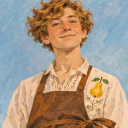

Книга ведущего · Уютный городской детектив / магический реализм · 12+ · 3–7 игроков + ведущий
Бюро украденного дождя
В Стеклёне идёт сухая неделя, но в забытых комнатах внезапно шумят дожди. Бюро погоды получает письма от луж, которых ещё нет, а известный мастер представлений заявляет: у него украли дождь. Семеро соседей берутся проверить невозможное — и выяснить, кто вправе решать, когда удивление становится обманом.
Перед чтением вступления сверьте место героев, присутствующих людей и предметы с итогом прошлого вечера. Если условия встречи отпали, сыграйте последствия там, где находится партия. Событие по расписанию может произойти за кадром. Герои узнают о нём от тех, кто был на месте.
Вечер 7. Если фокус воспроизведён, но Лев не признаёт авторство
Разделите на столе результат опыта и слова Льва. Зрителям можно показать подтверждённый способ появления дождя. Отдельно запишите, кто согласился говорить о подготовке представления и чьего свидетельства ещё нет.
Группа отказалась от задания
За пропавший дождь не берёмся. Предупредим соседей, чтобы из-за представления не отменяли свои планы. Говорим соседям, что для объявления кражи ещё нет основания. Соседи ведут собственные наблюдения. Афиша висит, бюро не подтверждает кражу.
Игроки раскрыли тайну раньше
Проверим опись и дату печати афиши. Попросим устроить повтор с независимыми зрителями. Доступные свидетельства — Полная опись дождя, Афиша раньше события. Все образцы на месте; текст о краже написан заранее. Лев собирал подтверждения для представления. Просим сверить пломбы и дату рекламного текста. Опись полна, анонс предшествует заявлению. Спрашиваем Кордона о постановке и обсуждаем согласие свидетелей вместо охоты на вора.
Партия уступила поле
Плащи удержали вход, мы не попали на показ изнутри. Просим показать итог опыта с открытой стороны. Ставим два ведра снаружи и публикуем только результат внешнего наблюдения. Как был устроен кожух, в отчёте остаётся вопросом.
Карман ведущего
Для игры без подготовки: что говорят люди, места в стороне от главной дороги и прохожие. Пометки о правде слухов — только для ведущего; сказанное за столом становится фактом мира, лишь когда вы его подтвердите.
Слухи
«Бюро погоды небом не командует. Там только записывают, что было, — так и на табличке у входа написано».
Правда. Правда из описания бюро. Слух пригодится, когда соседи готовы винить бюро в комнатных дождях: Вера и Эмиль ничего не устраивали, их дело — наблюдения и опись. Нового следа он не даёт.
«Дождь в забытых комнатах — это сами комнаты плачут, что про них забыли. Вспомнишь про комнату — дождь и кончится».
Неправда. Суеверие. Забытость — лишь тема выбранных декораций, а не причина дождя; опыт в обжитом Мерном дворе в четвёртом вечере это проверяет. Не подтверждайте слух и не превращайте его в поход: пусть его высмеют Надя или Тоня.
«У мастера Кордона дождь увели прямо со сцены, и теперь он сам бродит по городу, по пустым комнатам».
Отчасти правда. Дожди и правда шли в нескольких редко посещаемых помещениях. Но ничего не пропало, что покажет опись в третьем вечере, и дождь нигде не бродит: он идёт там, где стоит реквизит. Виновного слух не называет, не добавляйте его.
«В „Пуговице“ каждый чай пишут в журнал до минуты. Юра врать не станет, он и свои минуты сверяет по бюро».
Правда. Журнал заказов точен, Юра честен; это ведёт ко второму вечеру и кафе-алиби. Слух не говорит, что именно Юра видел и на какое время распространяется алиби: это герои выясняют сами.
«Кто в сухую неделю раскроет зонт в комнате, тот к себе дождь и приманит. Мой сосед раскрыл — и полночи слушал, как капает кран».
Неправда. Безобидная примета; кран соседа к делу не относится. Удобна для смешной реплики на лестнице почтовой комнаты, где помещается только один раскрытый зонт. Ничего не происходит, если зонт раскрыть.
«На свободном стуле у „Пятого стула“ чаще сидят коты, чем зрители. Но стул всё равно ставят каждый вечер».
Правда. Правда, Ида сама об этом шутит во втором вечере. Колорит кинотеатра и повод заговорить с Идой о зале; никакой улики в слухе нет.
«Комнатную погоду кондукторы выдумали, чтобы зонты в вагонах лучше раскупали».
Отчасти правда. Прозвище «комнатная погода» действительно пошло от трамвайных кондукторов, но зонтами никто не торгует и дождей кондукторы не устраивали. Хорошая реплика на остановке у канала; к делу ведёт только сам факт слухов.
«Алёна Цаплина проверяет реквизит для нескольких театров и подписывает только то, что перемерила дважды. Её словом не уговоришь».
Правда. Правда: Алёна — давно признанный независимый эксперт, в подготовке дождей она не участвовала. Слух помогает игрокам доверять её методу проверки, но не её званию: она сама попросит смотреть на весы.
«Медные водостоки потому молчат всю неделю, что их кто-то заговорил. Снимут заговор — запоют».
Неправда. Водостоки поют только в дождь, а у города обычная сухая неделя по прогнозу, полученному ещё до заявления Льва. Никакого заговора нет; если в финале пойдёт обыкновенный дождь, они просто запоют.
«На Мерном дворе ворота не запирают. Хочешь посмотреть на воду — смотри, никто тебя внутри не закроет».
Правда. Правда из описания двора. Это место открытых опытов четвёртого, шестого и седьмого вечеров; слух подсказывает, где можно проверять что угодно при свидетелях, ничего не раскрывая.
«В старой трамвайной мойке по ночам щётки сами ездят по канавкам — моют трамваи, которых давно нет».
Неправда. Сказка, которую любят пересказывать дети: щётки просто стоят в углу. Безобидный повод для смеха в четвёртом вечере; никакого ночного движения в павильоне нет, и проверять там ночью нечего.
Места в стороне
Остановка «Канал»
Трамвайная остановка у мостков, с деревянной скамьёй под жестяным козырьком. Здесь ждут трамвай и заодно обмениваются новостями: именно на этой скамье кондукторы прозвали странные дожди «комнатной погодой». На столбе висит доска объявлений, где соседи оставляют карточки «Полью цветы» и «Починю зонт». Трамвай подходит так тихо, что о нём узнают по звонку на повороте.
Соседняя читальня
Маленькая читальня в доме рядом со старым почтовым отделением, с тремя столами и печкой-голландкой. Сюда Надя свозит отсортированные книги, а мокрые раскладывает сушиться на подоконнике, переложив страницы промокашкой. Читать здесь можно до темноты, а брать книги домой — под честное слово, записанное в тетрадь. На двери висит колокольчик, который звенит так тихо, что его слышит только кошка.
Стекольная мастерская у склона
Старая мастерская, в честь которой, по преданию, назван Стеклён. В горячем цеху выдувают чашки тоньше бумажного листа и продают их в лавочке при входе, каждую не похожую на другую. Бюро погоды заказывает чашки только здесь. Подмастерья по вечерам выносят на крыльцо стеклянный брак, и дети собирают из него разноцветные окошки.
Будка «Починю зонт»
Тесная будка у моста через канал, где чинят зонты, трости и складные табуреты. На стене внутри висят забытые зонты с бирками, некоторые ждут хозяев годами. Мастер берёт за работу недорого, а за разговор и вовсе ничего. В сухую неделю у будки тихо: мокрых зонтов никто не несёт, и мастер от скуки чинит всё подряд, даже то, что не ломалось.
Мостки над каналом
Деревянные мостки над тёмной водой канала, ведущие от бюро к кафе «Пуговица». Они поскрипывают под велосипедами на разные голоса, и местные уверяют, что по скрипу узнают, кто едет. Перила отполированы ладонями, а на одной доске вырезаны чьи-то инициалы с датой давнего наводнения. Летом с мостков ловят пескарей, хотя поймать их не удавалось ещё никому.
Прохожие
Кондуктор Савелий
Пожилой кондуктор в синей фуражке, с сумкой для мелочи на ремне и компостером, который он носит как часы.
«Комнатная погода, граждане! Зонты складываем, проходим в вагон».
Может рассказать: Ведёт в тетрадке счёт зонтам, забытым в трамвае, и знает, что в сухую неделю их не забыли ни одного.
Марфа с лейкой
Пожилая соседка в цветастом переднике, с жестяной лейкой, которую она не выпускает из рук даже во время разговора.
«Герань сама себя не польёт. А дождь ваш — пусть сначала разрешения спросит».
Может рассказать: Каждое утро наполняет лейку на Мерном дворе и знает, что ворота там не запирали ни разу, даже на ночь.
Фрол Стеклодув
Плечистый мужчина с опалёнными бровями и в кожаном фартуке; в нагрудном кармане у него всегда лежит тонкая, как лист, чашка.
«Одинаковых чашек не бывает. Одинаково только то, что их бьют».
Может рассказать: Делает чашки для бюро погоды и знает, что бюро нарочно заказывает все разные, чтобы никто не перепутал свою.
Зонтовщик Тимофей
Сухонький старичок с очками на лбу и спицами от зонтов, торчащими из всех карманов жилетки.
«Сухая неделя — для зонтов отпуск. А для меня — сплошная скука».
Может рассказать: Всю неделю к нему не принесли ни одного мокрого зонта: на улицах Стеклёна дождя не было.
Почтальон Арсений
Высокий молодой человек на велосипеде с плетёной корзиной, в фуражке, сдвинутой на затылок.
«Писем много, адресов мало. Половина города живёт „у канала, где мостки“».
Может рассказать: Помнит, что старое почтовое отделение закрыли давно, когда открыли новое у трамвайного депо, а ячейки наверху раньше служили для писем до востребования.
Гоша с линейкой
Мальчишка лет одиннадцати с деревянной линейкой за поясом и мелом в кулаке; коленки в меловой пыли.
«А вы шагами меряли или линейкой? Шагами нечестно, у всех ноги разные».
Может рассказать: Знает, что по утрам на Мерный двор приходит целый класс с линейками и что плитки там ровно в крупный квадрат, удобный для счёта.
За десять минут до первой игры
Откройте первый вечер, прочитайте правду мира и участников. Остальные вечера — планы, их исход решают игроки.
Выберите пакет под фактическое число игроков. Первые три героя — готовое ядро; остальные добавляются по порядку. Возраст игрока не определяет героя.
Согласуйте темы, длительность и сигнал паузы. Передайте игрокам только players.html; раздатки выдавайте по отдельности после указанного открытия.
Откройте Мастерскую проекта, создайте личный черновик и импортируйте выбранный JSON через загрузку пакета. Проверьте состав и начало в предпросмотре. Запуск кампании подтверждает ведущий штатным действием.
Откройте иллюстрацию завязки отдельно. Портреты героев входят в файл для игроков, портреты встречных — в книгу ведущего. Тактические схемы доступны в разделе карт.
8 вечеров; 175 минут: 15 минут открытия и краткого пересказа, три сцены по 45 минут, перерыв 10 минут после второй сцены и 15 минут завершения. Если нужен более короткий вечер, разделите его после второй сцены; улики сохраняются.
Стеклён — город трамваев, камерных театров и бытовой магии. Бюро наблюдает погоду, хранит учебные образцы и принимает необычную почту; небом оно не управляет. У города обычный сухой прогноз. Герои — соседи, приглашённые независимыми наблюдателями. Классы третьего уровня имеют канонические возможности: профессии лишь объясняют их облик. Ни улика, ни опыт не требуют конкретного класса или заклинания.
Уютный детектив с честной игрой улик, сухим юмором и мокрыми декорациями. Подозрения касаются поступков; необычная магия имеет проверяемые границы. Никакой мировой катастрофы, спасения коммунальной системы или обязательного боя.
Разница между чудом и согласием на иллюзию
Правдивое алиби и неверный вывод
Граница между тайной фокуса и проверяемым утверждением
Право зрителя знать, во что его вовлекают
Достоинство ошибки и точной поправки
Границы
Для подростков и взрослых от 12 лет. Нет жестоких подробностей, угроз детям, обязательной романтики, тяжёлых семейных утрат и наказания за отказ делиться личным.
Ставки — репутация, небольшие расходы, сохранность бумаги и доверие. До игры можно анонимно исключить публичный стыд, тесноту или конфликт с наставником; замените сцену личной беседой, открытым навесом либо спором равных коллег.
Слово «пауза», поднятая ладонь или записка останавливают сцену без объяснения. Ведущий предлагает смягчение, пропуск или перемотку; это не расходует игровой ресурс.
Возраст не определяет достоверность показаний, класс или право руководить. Подростки получают полноценные решения, взрослые — право не знать. Шутки направлены на странность ситуации, а не на унижение подозреваемого или свидетеля.
Люди за столом
В начале каждого вечера передавайте жетон первого слова следующему игроку. Каждый получает до минуты на наблюдение или письменную записку и может сказать «пас». Взрослый не становится руководителем автоматически; решение за персонажа принимает его игрок.
Для каждого выбора предлагайте равноправные входы: конкретное «какую вещь переносим первой?» и более глубокое «кто вправе назначить эту потерю?». Любой участник выбирает свой уровень; оба ответа меняют сцену. Не поручайте подросткам только загадки, взрослым только переговоры.
Общее решение: соберите по одному предложению без перебивания, назовите цену вариантов и выберите проверяемое действие. При споре проведите обратимый опыт. Никто не вправе включить человека в ловушку или опубликовать личный разговор только потому, что большинство согласно.
При разделении сделайте максимум две группы. Обе объявляют действие, затем ведущий поочерёдно разрешает их короткими блоками до пяти минут. Не завершайте целую ветку без другой группы. Объединение — у чайника в конце каждой сцены, где выводы сообщают только сами исследователи.
Если игрок отсутствует, его герой занимается доставкой за кадром. Не разыгрывайте его секреты и решения. Улику принимает присутствующий доброволец; на возвращении игрок выбирает, что герой успел узнать. Первое трио и любая перестановка ролей сохраняют все маршруты расследования.
Сцены предлагают осмотр без броска. Проверка даёт скорость, аккуратность или дополнительные удобства; провал добавляет объявленную цену и конкретный следующий шаг. Все проверки и условные последствия разрешает ведущий по обычным правилам, это не новые автоматические механики.
В каждой сцене меняйте роли наблюдателя, собеседника и проверяющего опыт. На дополнительных местах нужны хранитель хронологии, проверяющий альтернативу, распорядитель реквизита и автор ясной поправки. Ни одна роль не владеет обязательной уликой.
В финале каждый выбирает своё дело, сохранившееся сомнение и форму ответа: речь, записка или пас. Прощение Льва, публичная речь, дружба с Алёной и участие в спектакле не обязательны.
Масштабирование группы
3 игроков
Тая, Григорий и Лина — самостоятельное ядро: разговор и хронология, безопасный осмотр, проверяемый опыт. Функции свободно передаются. В каждой сцене один действует, второй проверяет, третий ищет альтернативу; меняйте порядок. НИП даёт обычный инструмент, а не готовое решение. Встреча: 2 противника по 12 хитов.
4 игроков
Добавьте Даню или любого другого героя. Четвёртый ведёт версию, с которой группа пока не согласна, и получает первое слово при её проверке; в следующей сцене меняйтесь. Объявляйте действия вместе, разрешайте двумя парами. Встреча: 3 противника по 14 хитов.
5 игроков
Добавьте два любых места. Пара сравнивает образцы, пара беседует, пятый сопоставляет ответы; через пять минут группы меняют рассказчиков. Не увеличивайте количество обязательных доказательств. Встреча: 3 противника по 16 хитов.
6 игроков
Две тройки ведут разные проверки одного вопроса; в каждой есть наблюдатель, испытатель и собеседник. После пяти минут ведущий переключается, после сцены все встречаются у чайника. Публичное решение требует услышать обе тройки. Встреча: 4 противника по 18 хитов.
7 игроков
Две тройки и сменный связной, который выбирает порядок сопоставления, но не решает за остальных. В следующей сцене связным становится другой игрок. Каждый получает собственную маленькую задачу при испытании и личную реплику в эпилоге. Встреча: 5 противников по 20 хитов.
Первое чтение вслух
Стеклён спускается по пологому склону к каналу: медные водостоки, мостки над тёмной водой и тихий трамвай, который звенит на поворотах так деликатно, будто извиняется. На дверях домов висят карточки соседской помощи — «Полью цветы», «Починю зонт», «Посижу с котом». Сейчас в городе сухая неделя: водостоки молчат, а газета обещает солнце до самого воскресенья. Тем удивительнее слухи, что ходят по трамвайным остановкам: в забытых комнатах, куда годами никто не заглядывал, вдруг шумит дождь. Соседи спорят, к добру это или к беде, а трамвайные кондукторы уже прозвали это «комнатной погодой». Город, кстати, назван в честь старых стекольных мастерских: здесь до сих пор выдувают чашки тоньше бумажного листа. Бюро погоды занимает узкий дом у канала. Здесь записывают погоду, а не распоряжаются небом; на стене тикает барометр, пахнет бумагой и мятным чаем. На стойке стоят семь разных чашек — одинаковых бюро не держит, чтобы никто не перепутал свою. В сухой почтовый лоток из чувствительной бумаги падает конверт с потемневшим, влажным сгибом, и на нём выведено: «От лужи в старой почтовой комнате. Завтра, 18:10». Рядом с лотком мужчина в бархатном шарфе цвета хвои, известный в городе мастер представлений Лев Кордон, разворачивает афишу и прижимает её углы чашками. «У меня украли дождь, — говорит он с театральным поклоном. — Только не спрашивайте пока, как он выглядел». Заведующая бюро Вера, с серебристой косой и в тёмно-красном жилете, молча пододвигает к нему чистый лист. «Как раз это мы и спросим», — отвечает она и переводит взгляд на вас.
Правда мира · только ведущему
Кражи не было. Мастер камерных представлений Лев Кордон придумал заявление об «украденном дожде», чтобы независимые расследователи подтвердили невозможность его последнего спектакля. Все учебные дождевые образцы на месте. Он не называет виновного, но позволяет публике считать неполученные ответы доказательством настоящего преступления.
Лев законно взял напрокат три сценические «дождевые шторы» и установил их в старой почтовой комнате, кинозале и павильоне трамвайной мойки. Каждая штора превращает ровно два заранее налитых ведра в двенадцатиминутный дождь под своим карнизом. Магия не крадёт воду с неба и не зависит от памяти: забытые помещения выбраны как декорации из одной старой прогулочной открытки.
Первый пробный дождь прошёл в почтовой комнате накануне обращения в бюро, с 18:10 до 18:22. Лев действительно был тогда в кафе на виду у Юры. Его алиби истинно, но относится ко времени уже прошедшего показа, а не установки. Нынешнее письмо предсказывает отдельный повтор завтра: его исход ещё не произошёл. Остановка пускателя, перестановка карниза и взвешивание бачка дают повторяемые проверки без признания подозреваемого.
Письма настоящие: парная следовая бумага принимает обратный отпечаток ближайшей возможной лужи от уже подготовленного пролива. Лев положил один лист под будущий дождь, второй — в конверт бюро. Отпечаток описывает только нынешний путь воды и предметы, уже лежащие на нём; формула «если ничего не менять» спрятана сгибом. Смена поддона даёт поправку, старый конверт сохраняется. Бумага не предсказывает мысли, речь и решения.
Алёна Цаплина — давно признанный независимый мастер и эксперт сценического реквизита. Её спор со Львом касается границ тайны фокуса: она согласна сохранять тонкую настройку рисунка капель, но отказывается подтверждать непроверенные утверждения. Лев хочет закончить карьеру переживанием настоящей невозможности и считает объяснение угрозой этому переживанию. Ради него он выдумал кражу и без согласия использовал расследователей как рекламу. Алёна не участвовала в подготовке; её репутацию и имя никто не похищал.
Три независимых маршрута: вещественный — ворс карниза, одинаковый расход и пускатель; документальный — полная опись, датированная афиша и обычный договор проката; свидетельский — наблюдение установки, непрерывное алиби и демонстрация Алёны. Каждый даёт способ воспроизвести дождь и связать подготовку со Львом; ни один не требует успешного броска, доверия одному НИП или ложного обвинения.
Лев не всеведущ: он знает свои три площадки, настройку пускателей и пары листов. Контрольную площадку, маркировку и выбор группы он узнает лишь при сообщении или наблюдении. В финальном опыте герои заранее записывают предсказания и распределяют наблюдателей; если Лев сотрудничает, ловушка становится открытой демонстрацией. Если он отказывается, вещественных следов и независимого повторения достаточно.
Развязка проверяет заявление, а не распределяет славу. Возможны открытая реконструкция, коррекция перед теми же свидетелями или честный спектакль с добровольным разбором метода. Достаточность опыта зависит от наблюдения объёма, пуска и доступа, а не от публикации всех настроек декоративной насадки. Неизвестный механизм нельзя объявить доказанным; сохранённая тайна фокуса не оправдывает ложное сообщение о краже. Реакции зрителей и успех представления не предрешены.
Повороты сюжета
Только для ведущего. Сюжетные повороты держатся на мелочах, замеченных заранее: посейте их в названные вечера, а раскрытие отдайте героям, если они догадались раньше.
Кражи не было
Заявление звучит как настоящее преступление: у последнего спектакля украли дождь, и нужны независимые сыщики. На деле ничего не пропало: учебные образцы на месте, шторы взяты по обычному договору проката, а историю о краже написали ещё до обращения в бюро. Расследуют не вора, а заявление.
Что посеять
Вечер 1. Лев на вопрос, что именно пропало, отвечает только: «Тот самый, который должен был стать последним» — и отказывается описывать.
Вечер 2. Ида показывает запись о выдаче ключа Льву: «сухая примерка декорации» за день до первого дождя.
Поворот — вечер 3
В архиве Эмиль сверяет номера, пломбы и массу — все образцы на месте. Полина приносит первый оттиск афиши, где об украденном дожде говорится ещё до обращения. Пусть стол сам поймёт, что пропажи нет, а история подготовлена заранее. Если архив пропустили, ту же картину даст открытая строка договора проката у Олега.
Что меняется после
Вопрос меняется с «кто украл» на «зачем объявили кражу». Дальнейшие встречи проверяют способ постановки и честность заявления, а не ищут несуществующего вора.
Правдивое алиби о другом часе
Юра уверенно говорит, что Лев весь вечер сидел в кафе и ничего не мог сделать, — и это кажется концом подозрений. На деле алиби истинно, но относится ко времени уже идущего дождя, а не установки. Подготовка прошла за день до того, а пускатель открывает бачки без человека рядом.
Что посеять
Вечер 1. Надя показывает запись о вчерашней пробе: дождь шёл с 18:10 до 18:22, ровно двенадцать минут.
Вечер 1. Под чехлом в почтовой комнате находятся отрывной талон проката и полоса зелёного ворса.
Поворот — вечер 2
В кафе Юра восстанавливает минуты по чекам: Лев был у стойки с 17:55 до 18:30 и не уходил. Потом Ида открывает запись о сухой примерке накануне. Пусть стол сам разведёт два времени — показ и подготовку. Если Иду не спросили, тот же разрыв позже покажет пускатель за ширмой у Алёны.
Что меняется после
Алиби остаётся правдой, но перестаёт быть оправданием. Временная шкала делится на показ и подготовку, и каждое свидетельство отвечает только за своё время.
Письмо, которое можно переписать
Письмо в бюро кажется пророчеством: лужа описана раньше, чем появилась, вплоть до пуговицы на полу. На деле парная бумага лишь отпечатывает путь уже подготовленной воды и предметы, которые на нём лежат; условие «если ничего не менять» спрятано сгибом. Передвиньте пуговицу — и прогноз изменится.
Что посеять
Вечер 1. На сгибе письма мелким почерком видна условная строка, которую легко не заметить при первом чтении.
Вечер 1. Если пуговицу перенесли до дождя, новый влажный оттиск приходит уже без неё.
Поворот — вечер 6
В бюро Алёна объясняет парную бумагу: одна половина лежит там, где пойдёт вода, вторая получает её след заранее. Надя предлагает маленький опыт — переставить пуговицу до пролива, — и появляется поправка, а старое письмо остаётся. Пусть стол сам сформулирует, чего бумага не умеет: читать мысли и решения. Если опыт не ставили, ту же границу покажут два края одного листа.
Что меняется после
Письма перестают быть пророчествами. Финальный опыт может использовать их как проверяемый прибор с известной границей, а не как доказательство судьбы.
Восемь вечеров
1. Лужа ещё не родилась — Отделить заявление о краже от наблюдаемых странностей и сохранить первую проверяемую запись.
2. Алиби на блюдце — Понять границы правдивого алиби и связать показ с отдельным временем подготовки.
3. Всё на своих местах — Проверить само существование кражи и установить, что история была написана до обращения.
4. Дубль без хозяина — Воспроизвести дождь без Льва и замкнуть вещественную цепочку между установкой, расходом и алиби.
5. За ширмой метода — Определить достаточные условия проверки и отделить тайну фокуса от ложного заявления о событии.
6. Почта отменённых луж — Проверить реальные границы магии писем и подготовить условия, которые отличают объяснение от красивого рассказа.
7. Репетиция без подсказки — Собрать честный контроль, сохранить независимость свидетельств и выбрать форму финального сообщения.
8. Право удивляться — Провести выбранную проверку, сообщить только доказанные результаты и завершить личные истории без обязательного примирения.
Места
Стеклён
Небольшой город на пологом склоне, спускающемся к каналу. Медные водостоки в дождь поют на разные голоса, а в сухую неделю молчат. Тихий трамвай звенит на поворотах, мостки над тёмной водой поскрипывают под велосипедами. На дверях домов висят карточки соседской помощи: «Полью цветы», «Починю зонт», «Посижу с котом». Город славится камерными театрами и бытовой магией.
Бюро погоды
Узкий дом у канала с флюгером в виде чайника. Внутри пахнет бумагой и мятным чаем, на стене тикает барометр, на стойке стоят семь разных чашек: одинаковых бюро не держит, чтобы никто не перепутал свою. Почтовый лоток сделан из чувствительной бумаги и шуршит, когда приходит письмо. Здесь записывают погоду, а не распоряжаются небом, — так написано и на табличке у входа.
Забытая почтовая комната
Комната над давно закрытым почтовым отделением. Вдоль стен тянутся пустые ячейки с выцветшими номерами, посередине стоит стол с синим сукном, пол выложен синими и белыми плитками. Пахнет старой бумагой и пылью. Наверх ведёт узкая лестница, на которой помещается только один раскрытый зонт. Иногда здесь сортируют книги для соседней читальни.
Кафе «Пуговица»
Маленькое кафе на углу, где пахнет корицей и горячим молоком. На стойке стоит большая стеклянная банка запасных пуговиц: оторвалась своя — выбирай любую, таков обычай заведения. Рядом лежит журнал заказов, куда каждый чай записывают с точностью до минуты. Из окна виден служебный вход старой трамвайной мойки. По вечерам за стойкой собирают деревянные головоломки.
Архив учебных образцов
Небольшая прохладная комната при бюро. В деревянных ячейках стоят пронумерованные учебные флаконы с дождевыми образцами, под каждым — карточка массы и выдачи. Посередине стол сверки с весами под стеклянным колпаком. Посетителям выдают мягкие карандаши и тканевые закладки, чтобы не царапать карточки. Здесь отчего-то все говорят шёпотом, хотя никто этого не требует.
Кинотеатр «Пятый стул»
Старый кинозал на сорок деревянных кресел, где фильмы показывают редко, зато с живым тапёром. В фойе висит коллекция расписаний за много лет, пахнет плюшем и машинным маслом проектора. На крыльце всегда стоит один свободный стул — тот самый пятый, давший имя залу: его ставят для зрителя, который опоздал, но ещё может прийти.
Старая трамвайная мойка
Бывший павильон, где когда-то мыли трамваи. В бетонном полу остались неглубокие канавки для стока воды, под потолком — кронштейны, на которые теперь вешают декорации. Свет падает через высокое окно с матовым стеклом. Павильон иногда сдают для репетиций, и в углу до сих пор стоят щётки на длинных ручках, похожие на усталых часовых.
Оранжерея реквизита
Бывшая теплица со стеклянной крышей, запотевшей изнутри. Здесь выращивают живые растения для спектаклей — фикусы, плющ, лимонное деревце в кадке — и хранят бутафорские пейзажи: картонные горы, холщовое море, облака на проволоке. Пахнет влажной землёй и клеем. У двери стоит конторка выдачи реквизита с толстым журналом и ящичком отрывных талонов.
Мастерская подвижных декораций
Просторный общий зал, где стены складываются, как ширмы, а ширмы стоят, как стены. Пахнет стружкой, клеем и крепким чаем: вдоль окна тянется длинный чайный стол, за которым мастера спорят о шарнирах. На каждом инструменте подписано имя хозяина, а на готовых вещах висят бирки с условиями проката. По средам здесь ведут открытые занятия для всех желающих.
Мерный двор
Открытый двор за бюро, вымощенный плиткой в крупный квадрат: по ней удобно отмерять шагами и расстояния, и лужи. Под лёгким навесом стоят два одинаковых медных таза и весы, на стене висит доска для записей мелом. Ворота не запираются, и наблюдать воду здесь можно, никого не закрывая внутри. По утрам сюда приходят школьники с линейками.
Двор маленьких премьер
Камерный двор, где Стеклён смотрит маленькие премьеры: низкая сцена из досок, передвижной навес на колёсах и стулья в полукруге, так что из последнего ряда видно не хуже, чем из первого. На входе висит доска с условиями участия, рядом — плетёная корзинка для письменных вопросов. По местному обычаю после показа каждый зритель может задать артисту один вопрос.
Вера Осокина
63 лет. Серебристая коса, тёмно-красный жилет и карандаш с короткой резинкой. Заведует наблюдениями погоды; пригласила соседей независимо проверить необычное обращение.
Место: Бюро погоды
Намерение
Получить ясный ответ и исправить собственную преждевременную уверенность.
Собственные знания
Прогноз сухой недели получен до заявления Льва.
Письмо пришло в указанное время; открывала конверт при свидетеле.
Где находится архив и кто может показать опись.
Что говорит
При первой встрече. «Наблюдения — налево, догадки — направо. Небо нам не подчиняется, мы только смотрим».
О своей ошибке. «Я сказала газетчику „вероятно, похитили“. До всякой проверки. Это моя ошибка, и исправлю её я сама».
О прогнозе. «Прогноз на неделю — сухо. Он получен раньше заявления, и я его не меняла».
О журнале. «Подошью записи в журнал как есть. Что бы ни выяснилось, переписывать не будем».
О времени. «Время пишем по моим часам. Начало, конец и всё, что между».
В конце. «Дождь обыкновенный. Выводов не делаю. В журнале — только погода».
Секрет или личное убеждение
Успела сказать корреспонденту «вероятно, дождь действительно похитили», не проверив, что именно пропало.
Граница и раскрытие
Не знает устройства штор, мотивов Льва и содержимого неосмотренных образцов.
Показывает журнал при просьбе отделить наблюдения от догадок; признаёт собственную поспешную фразу, если герои сверяют точные цитаты, не требуя от них обещания молчать.
Лев Кордон
49 лет. Бархатный шарф цвета хвои, круглые запонки и плоский тубус для афиш. Известный мастер камерных представлений; заявил, что у его последней постановки украли дождь. Просит независимых свидетелей разобраться.
Место: Бюро погоды
Намерение
Закончить карьеру представлением, которое зрители переживут как настоящее невозможное событие, а не как прочитанную инструкцию.
Собственные знания
Свои три площадки, время установки и настройки пускателей.
Какие листы следовой бумаги он спарил и отправил в бюро.
Алёна давно выступает независимым экспертом и требует проверять конкретные утверждения; нынешнюю постановку он с ней не обсуждал.
Что говорит
О методе. «Тайна необходима представлению. Без неё зал видит инструкцию, а не невозможное».
О пропаже. «Опишу дождь — и вы станете искать описание, а не дождь».
О своей усталости. «Тридцать лет мне объясняют, как сделаны мои чудеса. Хотелось хоть раз, чтобы зал ушёл без ответа».
Об афише. «Это художественный образ. Я писал сюжет, а не сводку погоды».
О парной бумаге. «Значит, будущее можно поправить? Хорошая новость для фокусника. И плохая для меня».
Если признаётся. «Последний спектакль должен был быть невозможным. Оказалось, невозможно только соврать так, чтобы никто не проверил».
Секрет или личное убеждение
Кражу придумал он сам. Три дождя поставлены заранее арендованными шторами. Он считает, что раскрытие метода уничтожит переживание чуда, и ошибочно принимает это убеждение за право вовлечь расследователей без согласия.
Граница и раскрытие
Не знает закрытых планов героев, их маркировки и будущих решений. Не может менять реквизит вне показанного доступа.
На доказательства сначала отвечает «тайна необходима представлению». Если герои отделяют право скрыть необязательную настройку от ложного заявления о событии, может признать постановку и предложить проверку; при отказе доказательства проверяются без его признания.
Эмиль Носов
31 лет. Серые нарукавники, круглые очки и тканевые закладки в кармане. Хранит учебные образцы, показывает посетителям порядок сверки.
Место: Архив учебных образцов
Намерение
Чтобы слово «пропало» означало установленное отсутствие, а не хороший заголовок.
Собственные знания
Номера, массу и выдачу каждого дождевого образца.
Где хранится старый печатный экземпляр афиши.
Что говорит
О порядке сверки. «Номера, пломбы, масса — в таком порядке. Чужие записи не трогать, даже если очень интересно».
О слове «пропало». «Пропало — это когда ячейка пустая. Пока не увижу пустую ячейку, пишу „не установлено“».
О своей ошибке. «Он сослался на профессиональную тайну, и я не стал сверять. Это была вежливость не к месту».
О коллекции. «Шесть флаконов, шесть номеров, шесть пломб. Все на месте. Хотите — пересчитаем вместе».
О старой афише. «Старый экземпляр афиши — в нижнем ящике. Дата на нём раньше, чем вам бы хотелось».
О заголовках. «Хороший заголовок — ещё не доказательство. А хорошая опись — уже да».
Секрет или личное убеждение
Он не сразу сверил заявление, потому что Лев сослался на профессиональную тайну; теперь считает свою вежливость неуместной.
Граница и раскрытие
Не видел нынешних постановок и не умеет по реестру устанавливать автора монтажа.
Сверяет флаконы с любой группой по просьбе назвать пропавший номер; при грубом разговоре проводит ту же сверку с Верой в качестве свидетеля.
Алёна Цаплина
46 лет. Синий рабочий берет, мерная лента и перчатки с разными заплатами. Признанный независимый мастер сценического реквизита; ведёт открытые занятия и консультирует несколько театров. Известна точными проверками без обещаний объяснить чувства зрителей.
Место: Мастерская подвижных декораций
Намерение
Отделить достаточное доказательство от ненужного раскрытия сценического секрета и подтвердить только то, что можно повторно проверить.
Собственные знания
Два ведра дают двенадцать минут дождя; рабочий карниз и пускатель можно переставлять.
Как работает парная следовая бумага в известном ей сценическом опыте.
Как измерить расход и контролировать пуск при закрытом кожухе; точная настройка декоративного рисунка для такой проверки не нужна.
Что говорит
О доверии. «Не верьте моему берету и моим афишам. Вот протокол, вот весы».
О расходе. «Два ведра — двенадцать минут дождя. Ни капли больше, ни капли меньше».
О раскрытии метода. «Всё из любопытства — нет. Всё, что нужно для проверки, — да, и без уговоров».
О своём первом дожде. «Первый дождь я поставила в шестнадцать, на школьной сцене. Он лил не туда, и директор простоял в луже весь второй акт».
О своей подписи. «Способ повторяется — это я подпишу. А кто и зачем — уже не ко мне».
О тайне ремесла. «Секрет ремесла — это настройка капель. Ложь о краже — не секрет ремесла, и прикрывать её я не стану».
Секрет или личное убеждение
Она опасается, что подробный разбор привычки зрителя ждать фокус может обеднить удовольствие от показа. Это её убеждение, а не установленный закон; скрывать за ним ложное заявление о краже она не согласна.
Граница и раскрытие
Не знает, кто установил нынешние три шторы, пока не увидит следы. Не знает намерений Льва и будущих чувств зрителей; её экспертность не превращает предположение в факт.
Предлагает повторяемую проверку с закрытым кожухом и открытым измерением воды. Объясняет общую конструкцию по карточке, если группа хочет другой путь; не требует согласиться с её вкусами и не удерживает обязательные сведения за обещанием молчать.
Юра Медовый

15 лет. Белая рубашка с вышитой грушей и фартук, завязанный сбоку. Помогает вести журнал заказов и собирает настольные головоломки.
Место: Кафе «Пуговица»
Намерение
Чтобы его точные наблюдения не превращали в заявление о чужой невиновности.
Собственные знания
Время прихода и ухода Льва из кафе накануне обращения в бюро: 17:55–18:30.
Весь промежуток Лев решал головоломку у стойки; Юра сидел напротив.
Что говорит
Об алиби. «С без пяти шесть до половины седьмого. Я сидел напротив — вот здесь, где сейчас ваша чашка».
О головоломке. «Он всё искал недостающий уголок. Так мы его и не собрали».
Когда на него давят. «Можно я лучше напишу? Когда пишу, я не путаюсь».
О своих словах. «„Он не уходил“ — это я видел. „Он ничего не мог сделать“ — это уже не моё».
О пределах наблюдения. «Я видел только этот час. Про вчера и про завтра я ничего не знаю».
В конце. «Уголок так и не нашёлся. Заходите искать вместе».
Секрет или личное убеждение
Накануне обращения героев он действительно видел Льва всё время первого пробного дождя, но сократил рассказ до «он ничего не мог сделать». О завтрашнем повторе он ещё ничего не наблюдал.
Граница и раскрытие
Не видел день подготовки и не знает способа дождя. Его алиби не распространяется на другое время.
Восстанавливает последовательность с чеками при спокойном вопросе «что ты видел?»; при давлении передаёт точное письменное описание вместо дальнейшего спора.
Ида Кленц
70 лет. Лиловый плащ, короткая стрижка и ключи на ленте от киноплёнки. Проводит редкие показы в старом кинозале и записывает выдачу ключа.
Место: Кинотеатр «Пятый стул»
Намерение
Чтобы разрешение посмотреть комнату не считали разрешением разыграть её посетителей.
Собственные знания
Когда и кому передавала ключ; запись можно сопоставить с расписанием.
Где стоял длинный чехол после примерки.
Что говорит
О пятом стуле. «Пятый стул стоит здесь для зрителя, который опоздал. Чаще всего на нём сидят коты».
О разрешениях. «Смотреть — пожалуйста. Мочить мой зал — другое разрешение, его я даю отдельно».
О ключе. «Ключ на два часа, „сухая примерка декорации“. Так мне сказали — сухая».
О журнале выдачи. «Там чужие имена, им ваше дело ни к чему. Покажу одну строку».
О зрителях. «Ко мне ходят зрители. Пусть слышат от меня факты, а не пересуды».
О розыгрыше. «Разрешение посмотреть комнату — не разрешение разыгрывать моих посетителей».
Секрет или личное убеждение
Дала Льву ключ для примерки декорации накануне первого дождя; он назвал работу сухой пробой.
Граница и раскрытие
Не видела содержимого чехла и не знает, что Лев сказал бюро.
Показывает запись, если герои спрашивают о конкретном посещении, а не о «подозрительных людях»; согласие на будущий опыт даёт отдельно от прежней выдачи ключа.
Олег Вяз
37 лет. Соломенная шляпа, кожаный блокнот и зелёные заплаты на коленях. Выдаёт сценический реквизит и растения для показов.
Место: Оранжерея реквизита
Намерение
Получить вещи обратно целыми и отличать проверку договора от оглашения личных данных.
Собственные знания
Номера штор, дата выдачи, вместимость бачков и условия эксплуатации.
У кого сейчас находится демонстрационный пускатель.
Что говорит
О подозрениях. «Кого вы подозреваете, мне всё равно. Мне не всё равно, кто вернёт штору».
Об открытке. «Три комнаты — три карниза нужной ширины. Я выдаю шторы, а не мотивы».
О прокате. «Подписал, заплатил, унёс. Красть у меня ничего не требовалось».
О лимонном деревце. «Это деревце сыграло в шести пьесах. Все его хвалят, а лимона так и не дало».
О договорах. «Остальные договоры — чужие. Их я не покажу никому».
О мистификации. «Мистификация — дурная реклама проката. Мои шторы делают дождь, а не скандалы».
Секрет или личное убеждение
Выдал Льву три дождевые шторы под обычный договор; не знал о заявлении о краже и считает мистификацию дурной рекламой проката.
Граница и раскрытие
Не знает, где установили вещи и кому отправлялись письма.
Показывает общедоступную техническую карточку и открытую строку проката для заявленного публичного показа: номера, дату и имя заказчика. Адрес и остальные договоры закрывает; талон помогает дополнительно проверить конкретный экземпляр, но не обязателен.
Надя Локоть
27 лет. Полосатый шарф, книжная тележка и деревянные закладки в волосах. Иногда сортирует книги в старой почтовой комнате и носит запасной ключ.
Место: Забытая почтовая комната
Намерение
Сохранить спокойную работу и получить точное объяснение мокрых книг.
Собственные знания
Время установки и расположение чехла.
Какие предметы лежали на полу до появления письма.
Что говорит
При первой встрече. «Сначала книги, ладно? Тут три ящика, и вчерашний вечер они пережили хуже, чем я».
О комнате. «Забытой её зовут только на открытках. Я сортирую тут книги по вторникам и пятницам».
О чехле. «Чехол я видела своими глазами. А что репетицию разрешили — это я сама решила, никого не спросив».
О книгах. «Книги чужих премьер не любят. Особенно тех, что с дождём».
Если её подозревают. «Если вы думаете, что я в сговоре, — вот записка с датой. Разговор продолжим после извинений».
Перед опытом. «Ящики я перенесла в читальню. Теперь под карнизом хоть море разливайте».
Секрет или личное убеждение
За два дня до обращения в бюро видела, как Лев заносил длинный чехол; приняла это за согласованную с владельцем репетицию.
Граница и раскрытие
Не видела содержимого чехла, не знает прокатный договор и не может согласиться на опыт за владельца комнаты.
Описывает наблюдение при совместной схеме комнаты; если герои сочтут её участницей заговора, оставляет им датированную записку и прекращает разговор до извинения.
Тоня Белич
14 лет. Оранжевая куртка, прозрачный пенал и сапоги с нарисованными звёздами. Помогает с открытыми опытами и пишет рядом «что могло бы нас опровергнуть».
Место: Мерный двор
Намерение
Получить проверяемый ответ и равное место среди наблюдателей.
Собственные знания
Как одинаково отмерить воду и случайно распределить поддоны.
Какие наблюдения сделала сама; неизвестные свойства бумаги считает вопросами.
Что говорит
О вопросах. «Мне нужны только такие вопросы, которые могут честно проиграть».
О протоколе. «Записываем всё. Особенно то, что нам не понравится».
О старой пробе. «Раньше я рисовала только красивые опыты. А неудачный потом оказался самым полезным».
О жребии. «Кто тянет жребий, тот потом не наблюдает. Так честнее».
О бумаге. «„Виноват ли Лев“ не годится: бумага совесть не читает».
О своём месте. «Мне четырнадцать, но в протоколе мой почерк весит столько же, сколько ваш».
Секрет или личное убеждение
В раннем рисунке опыта оставила только красивую пробу, а теперь хранит и неудобные результаты.
Граница и раскрытие
Не знает виновника и не читает будущее решение человека по луже.
Даёт свой протокол каждому, кто согласен записывать и отрицательный результат; старую неудачную пробу показывает при сравнении полного журнала.
Полина Резцова
39 лет. Песочный жилет, папка и деревянный таймер для очереди реплик. Организует маленькие премьеры и помогает получать явное согласие участников.
Место: Двор маленьких премьер
Намерение
Провести честно объявленный вечер либо спокойно отменить его.
Собственные знания
Когда получила текст афиши и что разрешено показывать во дворе.
Кому уже отправлены приглашения и как передать тем же людям поправку.
Что говорит
О порядке реплик. «Говорим по очереди, минута на реплику. Таймер деревянный, но строгий».
Об афише. «Текст прислал он, я его только набрала. Я отвечаю за то, что печатаю».
О программке. «Вас назвали свидетелями на первой странице. Я этого не утверждала и печать остановила».
О зрителях. «Зритель должен знать одно — на что он идёт».
О поправке. «Каждый, кто получил первую афишу, получит и поправку. Контактов не выдам, доставку подтвержу».
О черновике. «Я вычеркнула „сенсационно“, „впервые“ и „потрясающе“. Остались факты».
Секрет или личное убеждение
Разместила эффектную афишу до заявления о краже: Лев заранее прислал именно такую формулировку.
Граница и раскрытие
Не знает устройства дождя, не может подтвердить преступление по рекламному тексту и не распоряжается чужим именем.
Показывает датированный макет по просьбе сравнить версии; даёт адресатам исправление через свой список, не выдавая героям чужие контактные данные.
Возможные финалы
Честный фокус
Условия: Установлен способ постановки; Лев явно исправляет заявление перед прежними свидетелями, условия проверки открыты, каждый участник отдельно согласен на новый показ.
Герои проводят спектакль, заранее назвав его иллюзией. Зрители могут выбрать последующий разбор или уйти с впечатлением; факты о ложном заявлении сообщают всем. Реакцию публики определяет игра.
Цена: Лев теряет легенду об истинном похищении. Если настройку декоративной насадки сохраняют закрытой, нужны особенно ясные измерения и независимые наблюдатели; полный разбор лишает будущие показы части сюрприза.
Эпилог — читать вслух
Через неделю во Дворе маленьких премьер идёт спектакль, который честно назван иллюзией. Лев выходит без шарфа и говорит залу прямо: кражи не было, дождь поставил он, а всё, что они сейчас увидят, — фокус. Потом гасит свет. Дождь идёт под карнизом, ровный и узкий, двенадцать минут, а вокруг сухо, и кто-то в первом ряду всё равно ахает. Зрители, которые хотят знать, как это сделано, после показа остаются на разбор; остальные уходят с впечатлением. Поправку о ложной краже получили все, кому раньше рассказали о похищении, — Полина отметила каждую доставку. Реакции разные: кому-то стало скучнее, кому-то, наоборот, интереснее смотреть на мастерство, когда знаешь, что это мастерство. Лев теряет легенду об истинном похищении — и, кажется, переживает это легче, чем ожидал. Настройка декоративной насадки осталась за ширмой, поэтому измерения были особенно точными, а наблюдатели — независимыми. Алёна стоит у кожуха и не говорит лишнего. Юра приносит головоломку: уголок так и не нашёлся. В журнале бюро Вера пишет только погоду.
Разобранное невозможное
Условия: Герои сохраняют опись, хронологию и повторяемый опыт; публично различают доказанное действие, вывод и неизвестное. Признание Льва не требуется.
Заявление о краже теряет основание. Герои показывают правдивое алиби и подготовку до события; бюро выпускает точную поправку с перечислением открытых вопросов.
Цена: Последний спектакль Льва может отмениться. Часть зрителей обижена, а герои отвечают за точность собственных формулировок; запретить людям любить иллюзии нельзя.
Эпилог — читать вслух
Признания Льва не понадобилось. Опись Эмиля показала, что ничего не пропало. Афиша Полины — что история была написана до обращения. Пускатель Алёны и чеки Юры — что алиби истинно, но относится не к тому часу. Дождь на Мерном дворе повторили без Льва, без забытого места и без чуда. Заявление о краже потеряло основание. Бюро выпускает точную поправку: что доказано, что выведено и что осталось неизвестным — три колонки, как учила Вера. Последний спектакль Льва, скорее всего, отменится. Часть зрителей обижена: они хотели настоящего невозможного и получили инструкцию. Герои отвечают за точность собственных формулировок — ни слова сверх проверенного, ни одного лишнего прилагательного. Запретить людям любить иллюзии нельзя, и никто не пытается. Лев читает поправку стоя и молча уходит. Олег получает шторы сухими. Ида снова показывает в своём зале обычные фильмы. Тоня хранит в протоколе и удачные пробы, и ту неудачную, что оказалась полезнее всех. Лужи в Стеклёне снова появляются только после дождя.
Поправка без сцены
Условия: Лев соглашается на письменную коррекцию и возмещение согласованных расходов; её получают все, кому сообщили обвинение, без тайного сохранения ложной версии.
Дело закрывается через личные встречи и короткую заметку. Объяснение содержит достаточные условия проверки, не обещая знания каждой детали реквизита; никто не обязан участвовать в новом проекте.
Цена: Нет общего победного показа, не все прочитают поправку сразу. Героям нужны адресаты и подтверждения доставки; приватность не означает спрятать правду от пострадавших.
Эпилог — читать вслух
Общего показа не будет. Лев соглашается на письменную коррекцию и возмещение согласованных расходов: Иде — за вытертый пол, Наде — за перенесённые книги, бюро — за потраченное время. Поправку получают все, кому рассказали о краже, и ни один адресат не остаётся с прежней версией. Полина отмечает каждую доставку в своём списке, не выдавая чужих адресов. Дело закрывается через личные встречи и короткую заметку в журнале бюро. Объяснение называет всё, что нужно для повторения опыта, — объём, время, доступ — и не обещает знания каждой детали реквизита. Никто не обязан участвовать в новом замысле Льва, и никто не участвует, если не хочет. Цена у такого конца есть: не все прочитают поправку сразу, и кто-то ещё долго будет рассказывать в трамвае про украденный дождь. Нужны адресаты и подтверждения доставки, а не красивая сцена. Приватность не значит спрятать правду от пострадавших — и её не прячут. Вера подшивает письмо Льва в журнал рядом с первым конвертом: два листа, одна правда, никакого спектакля. Карандаш с короткой резинкой ложится поверх.
Незавершённая афиша
Условия: Лев отказывается исправлять заявление, либо группа не получила достаточных свидетельств его личной подготовки. Метод дождя всё равно воспроизведён и отделён от версии о виновнике.
Бюро сообщает, что кража не подтверждена, и публикует воспроизводимый опыт без недоказанного обвинения. Сохраняется возможность продолжить личную проверку после восьмого вечера.
Цена: Слухи не исчезают мгновенно; герои принимают предел доказательства. Это честная незавершённость, а не автоматическое оправдание или обвинительный приговор.
Эпилог — читать вслух
Лев отказался исправлять заявление — или группе не хватило свидетельств его личной подготовки. Но метод дождя воспроизведён и отделён от версии о виновнике: два ведра, карниз, пускатель, двенадцать минут, без всякой магии забытых мест. Бюро сообщает, что кража не подтверждена, и публикует воспроизводимый опыт — без недоказанного обвинения. Вера подписывает сообщение и добавляет внизу, что поставивший дождь не установлен. Слухи не исчезают мгновенно: кто-то по-прежнему считает Льва гением, кто-то — обманщиком, кто-то — жертвой неведомого вора. Герои принимают предел доказательства. Это честная незавершённость, а не оправдание и не приговор. Личное расследование можно продолжить после восьмого вечера — если найдутся новые свидетели или документы. Олег больше не сдаёт шторы без отметки о публичном показе. Полина печатает афиши только с подписью заказчика. Тоня оставляет в протоколе пустую строку «умысел» — для тех, кто когда-нибудь сможет её заполнить. Лев продолжает гулять по Стеклёну в шарфе цвета хвои, и его тайна теперь принадлежит только ему.
Раздатки · выдавать постепенно
Письмо ещё не родившейся лужи — После осмотра конверта и его сгиба в первом вечере; не выдавать вместе с приглашением.
Точное наблюдение Юры — Когда группа спокойно уточнила границы кафе-алиби во втором вечере либо получила письменный fallback.
Копия сверки — После совместного пересчёта образцов в третьем вечере.
Первый оттиск афиши — После сравнения макета и даты приёма у Полины; можно получить раньше третьего вечера при самостоятельном маршруте.
Карточка ДШ — После сверки талона или открытой демонстрации у Олега либо Алёны.
Что именно подтверждает опыт — После обсуждения проверяемого утверждения с Алёной в пятом вечере или независимого чтения её открытого протокола.
До первой капли — Когда герои готовят контрольный опыт в шестом или седьмом вечере; не выдавать как уже заполненный результат.
Карточка точной поправки — В восьмом вечере после установленных результатов и выбора способа их сообщения.
Как читать игровые проверки
Проверки характеристик и навыков, переговоры, часы и последствия из книги разрешает ведущий. Они не являются дополнительными автоматическими правилами приложения. Улики доступны без обязательного успешного броска. Подготовленные встречи начинаются только по решению ведущего; исходы и эпилоги заранее не записаны.
Статус подготовки
Авторская кампания подготовлена отдельным агентом, запрошенным как GPT-6 Astra / max. Проверки пакетов и игровых границ описаны в verification.json и общем отчёте. Живой плейтест с людьми ещё не проведён. Локальная папка с исходниками и книгой предназначена ведущему.